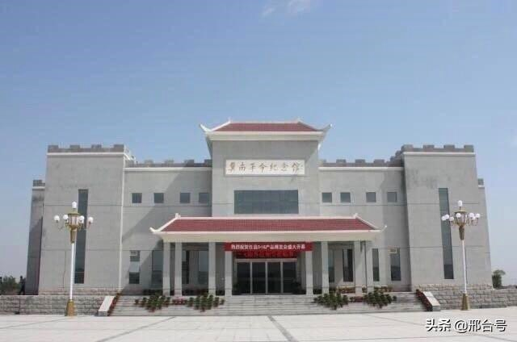

2020年第四届“华夏文化，有冀可寻”河北地域特色文化线上展览|红色文化篇（一）
在西方人眼中，红色即是中国的"国色"。中国人就是有着强烈红色情结的民族。红色代表革命，马克思早年曾在被问及"最喜爱的颜色"时，明确回答为"红色"。1864年，第一国际成立，其标志的颜色是红色。《国际歌》中也唱到:"快把那炉火烧得通红，趁热打铁才能成功!"回顾中国共产党领导人民闹革命、打天下的光辉历程，与红息息相关，时时刻刻未能分离过。现在让我们走进线上展览“华夏文化，有冀可寻”|红色文化篇，领略河北的红色文化吧。
一、保定市红色文化
1. 阜平县陈南庄晋察冀军区司令部旧址
1947年，晋察冀军区司令部曾设在这里。1948年春，毛泽东、周恩来、任弼时等同志率中央机关由陕北向西柏坡转移，途经城南庄，在此居住、工作了46天。
纪念馆总占地面积10253.6平方米，分为南北两个院。北院为旧址及毛泽东、党中央在阜平陈列馆。分为前后两个院，后院为晋察冀军区司令部旧址，也是毛泽东等中央领导同志在城南庄期间的居住和办公的地方，占地面积5253.6平方米。馆内藏有大量珍贵的原始照片、实物和有关专家创作的图片共247件，其中有毛主席起草的《新解放区农村工作的策略问题》、《一九四八年的土地改革和整党工作》和《纪念“五一”劳动节口号》等重要文件的手稿和一些文件、指示。
1937年，“七七事变”，抗日烽火燃遍华北大地，毛主席在9月24日指出：“目前应以全力布置恒山、五台、管涔三大山脉之游击战争，而重点于五台山脉。毛主席把这一重任交给了聂荣臻，由他担任司令员兼政治委员，建立晋察冀军区。1937年11月7日，晋察冀军区在山西省五台县宣告成立，11月18日，从五台县迁到了河北省阜平。晋察冀军区的成立及其活动，对华北日军构成极大威胁。
（选自红号角）
2.冉庄地道战遗址
冉庄地道战遗址为国家AAAA级旅游景区、全国重点文物保护单位、红色旅游经典景区、爱国主义教育基地。
冉庄地道战遗址位于河北省清苑县，1961年3月被国务院列为全国首批重点文物保护单位。1995年1月被共青团中央确定为全国青少年教育示范基地，1997年6月被中宣部命名为全国爱国主义教育示范基地。国家AAA级景区。主要景点有：冉庄地道战纪念馆、冀中冉庄地道战展厅、冉庄地道战遗址保护区等。
冉庄地道战纪念馆建于1959年，当时隶属于冉庄村，随着时代的变迁和实际任务的需要，纪念馆几度变更，2004年3月成立清苑县地道战遗址文物保护管理委员会暨清苑县爱国主义教育基地管理委员会，为县委直属正科级全额拨款事业单位。纪念馆由聂荣臻元帅题写馆名。
冀中冉庄地道战展厅于1991年建成，1997年重新布展，杨成武将军为展厅题写门匾，展厅内珍藏着大批革命文物，利用声、光、电等现代化展示手段再现了当年情景。
冉庄地道战遗址保护区30万平方米，现仍保留着上世纪三、四十年代冀中平原村落环境风貌，完整保留着高房工事、牲口槽、地平面、锅台、石头堡、面柜等各种作战工事，并对冉庄抗日村公所、抗日武装委员会等进行了复原陈列，使人如置身于战争岁月。地下完整保留着当年作战用的地道3000米，以及卡口、翻眼、囚笼、陷阱、地下兵工厂等地下作战设施。
1937年"七七事变"后，日军大举南侵，采取"铁壁合围"、"纵横梳篦"的清剿战术，进行灭绝人寰的"大扫荡"，实行"烧光、杀光、抢光"的三光政策。仅在6万平方公里的冀中平原上，就修筑据点、炮楼1783处，修公路2万多千米，挖-沟8878千米，把冀中平原细碎分割成2670块，使冀中人民蒙受了巨大的战争苦难。在被逼无奈的情况下，冀中人民展开了地道斗争。并继而成为在无险可守的平原地区保存自己，消灭敌人，坚持敌后抗战，扩大抗日根据地，扭转战局的一种独特战斗方式。冉庄人民以其聪明才智和创造精神，巧妙地设计了各种工事和地道口，部署不同的作战方法，在普通的村庄，创出了不平凡的业绩，被誉为地道战模范村。聂荣臻元帅曾为此亲笔题词:"神出鬼没，出奇制胜的地道战，是华北人民保家卫国，开展游击战争，在平原地带战胜顽敌的伟大创举。地道战又一次显示出人民战争的无穷伟力。"
冉庄地道以十字街为中心，有东西南北主要干线4条，长25公里。南北支线13条，东西支线11条。还有西通东孙庄，东北通姜庄的连村地道;有向东南通隋家坟和河坡的村外地道，形成了村村相连，家家相通，能进能退，能攻能守的地道网。地道的出入口设计十分巧妙，有的修在屋内墙根壁上，有的修在靠墙根的地面，还有的建在牲口槽、炕面、锅台、井口、面柜、织布机底下等处，伪装得与原建筑一模一样，使敌人很难发现。
地道一般距地面2米，洞高约1米~1.5米，宽约0.8米~1米，分为作战用的军用地道和供群众隐蔽用的民用地道两种。地道设有照明灯和路标，建有储粮室、厨房、厕所和休息室。为了充分发挥地道的优势，在村里各要道口的房顶上修建了高房工事，在地面修建了地堡，把地道与地面工事有机地结合起来。还根据不同的地形地物，分别在小庙、碾子、烧饼炉、柜台、墙角、墙根等处，修筑了工事、枪眼。所有这些工事都和地道相通，既能观望，又能射击和拉雷。冉庄地道战工事具有防破坏、防-、防水灌、防毒气、防火烧的特点。
冉庄地道战工事还有"三通"和"三交叉"的特点，"三通"就是高房相通、地道相通、堡垒相通，"三交叉"就是明枪眼与暗枪眼交叉、高房火力与地堡火力交叉、墙壁火力与地堡火力交叉。
冉庄村：冉庄村东距保衡路9公里，西距京港澳高速公路8公里，距107国道15公里，蠡野路（原张望路）东西横穿全境，旅游路南北穿越而过。该村交通便利，村内道路硬化率高达90%以上。 全村居民970户，人口3619人、党员115人，其中妇女党员11名，建国前老党员4名，该村耕地面积5331.6亩。行政村面积1800亩，其中遗址保护范围450亩。
3.清苑观音寺
观音寺位于保定市东北15公里的清苑县闫庄乡国公营村，西距京深高速公路3公里。观音寺始建年代不详，约在隋唐时期。据大明正德十年（1515）敕赐南禅讲经沙门、华严大师弟子义济、定敏、慧堂所撰《重建观音禅寺之记》记载：“直隶保定府清苑县闫庄社，在郡城之东北二十五里许，地名国公营。村后有古刹一所，大定年间（1161~1189年）重建。”后因时间久远，寺院逐渐坍塌。正德十年，信士善人詹福友、钟庆延请到大慈阁寺僧省公无幻禅师重建寺院。明天启三年（1623），湖广承天府地方守备司礼监、临发内宫监太监边静宁（清苑县国公营人）发心重修观音禅寺。自当年二月初始，至天启五年（1625）八月，用两年半的时间，将天王殿、大雄宝殿以及配殿、禅房等修建一新。重建后的观音寺“轮奂丰美天花散彩……香火续千年之焰，常明照大地之光”。于此可见观音寺当时规模兴盛之一斑。然而这座千年古刹在民国初年拆庙办学的浪潮中被毁坏殆尽。
改革开放后党的宗教政策得到落实，1992年，观音寺作为佛教活动场所正式开放。明空老法师应请自北京法源寺卓锡来此，承担起中兴古刹重任，他不顾年老体衰，主持修复工作，殚精竭虑，积聚人力物力，历时四载，先后建成弥勒殿、观音殿、念佛堂（藏经楼）、七层当阳宝塔和大雄宝殿。自此，昔日荆棘丛生，荒草遍野之地，一变而为庄严道场。
1996年明空上人示寂，监院真广法师继任主持，他奔波忙碌、筹措善款，先后又兴建了九层舍利宝塔、祖师塔、客堂、斋堂、及两序寮房，2005年5月至2006年7月又兴建了建筑面积4000平方米的-楼和5000多平方米的云水楼，并不断绿化美化寺院、完善规章制度、加强僧才建设，使观音寺逐渐发展成为新型佛教丛林。
观音禅寺现占地面积36000多平方米，建筑面积13000余平方米，绿地1500平方米。寺内绿茵缀地，松柏挺拔，花木摇翠，奇葩献瑞，建筑宏伟，宝相庄严，特别是堪称当地一绝的双塔景观，吸引八方朝圣。寺院建筑整体布局严谨，中轴线上从南到北依次为天王殿、观音亭、大雄宝殿、念佛堂、-楼。东西两侧分别是舍利宝塔、客堂、斋堂、和当阳宝塔、云水楼、大斋堂。
3革命烈士纪念碑

碑亭在程委村西北隅，程委地段医院院内，碑亭共八块石碑，碑文记述了在抗日战争中为民族解放事业英勇战斗不怕牺牲的革命烈士的丰功伟绩，并刻有268烈士的姓名、籍贯、职务、是县重点文物保护单位。
具体位置：革命烈士纪念碑亭在程委村西北隅，程委地段医院院内。
4.晋察冀烈士陵园
晋察冀烈士陵园位于唐县军城镇南关村。所处位置相传宋代名将杨六郎阅兵教场。总占地面积67亩，这里背靠高耸的古城遗址，东临古老的通天河，四周群山环绕，园内绿树掩映，墓碑林立，风景异常秀美。晋察冀烈士陵园原为晋察冀边区抗战烈士公墓，始建于1940年2月，那时战火纷飞，物资缺乏，敌人骚扰，边区军民克服了难以想象的困难，先后用了一年多的时间才完成。可是1941年却两次遭到敌人的严重破坏，炸毁了纪念塔等主要建筑，1942年边区军民又利用间隙进行修复。建国后党和政府又拨专款多次组织修缮和扩建，使陵园结构完整，建筑协调，墓林相间，相得益彰，定名为晋察冀烈士陵园。陵园坐西朝东，以中间的白求恩墓为中轴线，南侧是柯隶华墓，北侧是琼尤恩墓，拾线而上的是烈士公墓和晋察冀边区抗战烈士纪念塔遗址。晋察冀烈士陵园是一处埋葬忠骨的圣地，也是人们祭奠英灵的场所，前来祭扫，拜谒和参加纪念活动的人络绎不绝。白求恩、柯棣华的亲属和加拿大、印度、美国、朝鲜、日本等国友人常来这里凭吊和参观游览。杨成武、吕正操等老一辈无产阶级革命家曾到陵园故地重游，1986年4月中共中央总书记-前来陵园观瞻并植树纪念。
5. 博野毛泽东像章文化展馆

河北博野毛主席像章文化展馆是迄今为止河北省最大的毛主席像章展馆，其展现形式在全国也是独树一帜。
展馆位于河北省保定市博野县城区，总面积约680平方米，收藏像章25万余枚，馆内展有167块以毛主席像章为主要展现形式的主题展板,310余幅红色宣传画，260余尊毛主席瓷像等展品。像章 的表现内容主要有1893年毛泽东韶山诞辰、创建井冈山革0据地、红军两万五千里长征、延安红色政权、开国大典等。制作材料既有铝、铁、瓷等普通材料，又有木头、竹 片、海绵、玻璃、荧光等特殊材质；像章大小从最小的1.2厘米到最大的38厘米不等；形状则分圆、方、齿轮、心形、其它异形等不一而足。
展馆的建设共分二期完成，其中展馆一期主要是以中国的世界遗产和非物质文化遗产为展现背景，通过艺术呈现，将独特的红色内涵融入对我国的壮美山川、灿烂文化的展示之中，形成一幅幅别具匠心的艺术品。展馆把主要以博野县籍书画名家精心创作的书画精品和毛主席像章有机结合起来，生动反映了党和国家的几代领导集体以及老一辈无产阶级革命家的光辉史实和丰功伟绩。
6、与保定有关的红色电影
跟保定有关的老电影有很多，而且大多是红色经典。《地道战》《狼牙山五壮士》《小兵张嘎》《野火春风斗古城》，这些影片反映的都是发生在保定的抗战故事，故事原型在保定，影片拍摄也在保定。
熟悉的旋律，萦绕耳边；熟悉的镜头，印在心头。一部部红色经典电影，成为一代又一代人的成长记忆，10部老电影贯穿整个保定抗战史。
保定是历史文化名城，更是一片红色热土，因多部红色电影而驰名。
以保定这块热土为发生地，以保定人民的抗日斗争故事为原型拍摄的《小兵张嘎》《地道战》《狼牙山五壮士》《野火春风斗古城》等著名老电影，谱写了一首首不朽的战歌，成为代代传承的红色经典。
近日，记者见到保定市方志馆副馆长、保定抗战历史研究会秘书长冉白正时，他正在电脑前编著《保定抗日战争史料长编》。编纂过《保定红色文化文库》《保定抗战历史图志》的冉白正，对保定抗战史烂熟于胸。从冀中平原到巍巍太行，从古城到水深苇密的白洋淀，从敌后武工队到雁翎队，从少年英雄王二小到狼牙山五壮士，冉白正谈起来滔滔不绝。
在保定抗战史料馆内，陈列着大批保定抗战史料和书籍。随手翻开一册，便是一首可歌可泣的壮歌。随着冉白正的解读，记者仿佛回到了战火纷飞的岁月。
比如，杨成武在易县、涞源一带指挥的大龙华、雁宿崖、东团堡等山地歼灭战，使敌闻风丧胆；全国民兵战斗英雄李殿冰等把麻雀战运用得最为出色；民兵爆炸英雄李勇等开展的地雷战，冀中平原清苑县冉庄等地民兵创造的地道战，白洋淀雁翎队创造的水上游击战以及破袭战、围困战、挑帘战等无处不在。
冉白正说，在党的领导下，军民携手在保定敌后抗日战场，进行了艰苦卓绝的斗争，而这些几乎都在老电影里得到了体现。
“放眼全国，还没有一个地方能够像保定这样，滋养出这么多的红色影视作品。”冉白正说，以保定为背景的红色经典电影有很多，大多拍摄于20世纪五十年代至六十年代，而尤以抗战题材居多，比较知名的约有10部。
“地道战，嘿，地道战，埋伏下神兵千百万……”电影《地道战》以清苑县冉庄地道战为原型，也是在冉庄实景拍摄，是冀中人民利用地道抗击日本侵略者的一个缩影。
“昨日狼牙山顶屹立着壮士五个，棋盘陀上的峭壁，壮士挺身跳落。”1941年9月份，在反扫荡的突围战中，5位八路军战士宁死不屈的悲壮一跳，让《狼牙山五壮士》这首壮歌至今咏唱。
夏天的白洋淀，绿波荡漾，一只只游船画舫在芦苇荡间穿梭，不时激起白色的浪花，《小兵张嘎》的传奇至今在这片美丽的水乡传颂。与日伪斗智斗勇的张嘎子的背后，其实是雁翎队这支活跃在白洋淀上的民间抗日武装与日伪抗争的历史写照。
在1963年上映的《野火春风斗古城》，描述的是1943年冬天我党地下工作者在保定开展秘密斗争的故事，镜头里的西大街、老城墙在今天仍然可以看到。
除此之外，还有《青春之歌》《新儿女英雄传》《平原游击队》《白求恩大夫》《烈火金刚》《少年英雄王二小》等多部反映抗日战争期间，保定人民与日寇浴血奋战的慷慨壮歌。
“保定这片土地不仅为红色经典电影提供了创作题材，更在中华民族不屈不挠的奋勇抗战史上，谱写了浓墨重彩的华章。”冉白正说，这10部老电影，几乎贯穿了整个保定抗战史，谱写了一部壮丽的保定抗战史诗。
（选自红军梦，中国魂）
二、石家庄市红色文化
1.西柏坡-新中国从这里走来
西柏坡位于河北省石家庄市平山县中部，总面积为 16440 平方米，曾是中共中央所在地，党中央和毛主席在此指挥了决定解放战争走向的辽沈、淮海、平津三大战役，召开了具有伟大历史意义的七届二中全会和全国土地会议，解放全中国，故有“新中国从这里走来”、“中国命运定于此村”的美。
西柏坡，这个冀西山区滹沱河北岸的小山村，它地处华北平原和太行山交汇处，在一片向阳的马蹄状山坳里，三面环山，一面环水，西扼太行山，东临冀中平原，距华北重镇石家庄仅90公里。交通方便，易守难攻，既适宜危机时刻向山里撤退，顺利时又便于向城市进军。从经济条件来看，西柏坡村一带村庄稠密，相距多在1－2公里，且沿滹沱河分布，依山傍水滩地肥美，地宽粮丰，稻麦两熟。聂荣臻元帅曾这样说过：“平山县可称得上是我们晋察冀边区的乌克兰。”较发达的农业经济，有利于保障军民的经济供给，为党中央驻地提供物质基础。

1947年5月，中共中央工委选定这个地方，1948年5月中旬，毛泽东同志率领中共中央、中国人民解放军总部移驻这里，使这个普通的山村成为“解放全中国的最后一个农村指挥所”，成为中国共产党领导全国人民和人民解放军与国民党进行战略大决战，创建新中国的指挥中心。从此，西柏坡以其独特的贡献，彪炳于中国革命史册，竖起一座不朽的历史丰碑。
西柏坡精神由毛泽东在西柏坡召开的中国共产党七届二中全会上提出，是指以毛泽东为首的党中央在驻西柏坡期间，所体现和创立的一系列革命精神。由于它产生于中国革命重要的历史转折关头，决定着中国革命的前途和命运，所以它集中体现了敢于斗争、敢于胜利的彻底革命精神，体现了头脑清醒、目光远大的胜利者图强自律的精神。
（选自红号角、红色冀号、红军梦，中国魂）
2. 华北军区烈士陵园
华北军区烈士陵园是河北省退役军人事务厅直属正处级事业单位，位于省会石家庄市，是我国兴建早、规模大、建筑规格高的著名烈士陵园之一。陵园占地21万平方米，主要纪念建筑物有：烈士纪念碑、影视厅、迎宾厅、烈士纪念馆、印度援华医疗队纪念馆、华北革命战争纪念馆、华北局纪念亭、白求恩墓、柯棣华墓、烈士墓区和颇具规模的铜像群以及董振堂、赵博生纪念亭等。
（选自红色冀号、红军梦，中国魂）
3. 华北革命战争纪念馆
华北革命战争纪念馆总建筑面积5450平方米，其中展厅面积3000平方米，陈展主题为：“红色太行，英雄河北”。整个展览分为三大部分，分别是“红旗插遍燕赵大地、革命运动风起云涌；抗日烽火燃烧燕赵、万众一心抵御外敌；河北军民保卫解放区、柏坡圣地孕育新中国”。展览以大量丰富翔实的历史图片，珍贵的历史文物，通过声光电等高科技手段和多种艺术表现形式，生动形象的展示了我省军民在中国共产党的领导下的革命斗争史，特别是10组雕塑和大型油画增加了展览的历史感和厚重感，丰富了展览内涵。
（选自红色冀号）
4. 英雄石家庄之激情岁月
石家庄是解放战争时期全国解放的第一个大城市，被誉为“夺取大城市之创例”，在多个方面向全国解放和建设提供了范例，具有非凡的历史和时代意义。抗日战争时期，石家庄地区属晋察冀敌后抗日根据地南端，石家庄人民用血肉之躯凝聚起巍峨的太行风骨。震惊中外的梅花镇惨案、神出鬼没的高平村地道战、威震敌胆的八路军百团大战等，都发生在这里。重走革命路，重温革命史，会使我们深刻感受太行儿女不屈不挠的斗争意志，传承伟大的中华民族精神,为推进实现中华民族的伟大复兴而努力奋斗。这段激情岁月我们无法忘怀。
（选自红军梦，中国魂）
三、唐山市红色文化
1.李大钊纪念馆
李大钊纪念馆，坐落在河北省唐山市乐亭县新城区大钊路，1997年8月16日建成。占地100亩，建筑面积4680平方米。
李大钊纪念馆，由江泽民总书记题写馆名。李大钊纪念馆是李大钊同志生平业绩的展览中心、钊研究中心、爱国主义教育基地和旅游胜地。被中宣部确定为全国百个爱国主义教育基地之一。全国百个红色旅游经典景区之一、全国三十条红色旅游精品线路之一，全国廉政教育基地、国家国防教育示范基地，河北省党史教育基地，多次被评为全国精神文明建设先进单位、河北省精神文明单位，李大钊纪念馆现为国家4A级旅游景区。
李大钊纪念馆对外开放以来，在爱国主义教育中发挥了巨大作用，特别是2008年免费开放后，年均接待全国各地观众及海外游客150余万人次，且成逐年递增趋势，2012年接待观众已达180万人次，先后有500多个学校、机关、社区在李大钊纪念馆建立了德育教育基地。该馆还组织了宣讲团，走向社会扩大宣传，先后到北京大学、清华大学、天津政法干部管理学院等高等院校及机关、中小学校、军营、社区、村镇等开展李大钊精神主题宣讲活动。
李大钊是我国最早的马克思主义者，是中国共产党的创始人之一。在国共合作期间，他帮助孙中山确定了联俄、联共、扶助农工三大政策和改组国民党的工作。是我国近代革命史上具有重要地位的领导人。1927年4月6日被军阀张作霖逮捕，28日在北京英勇就义。纪念馆建筑由灰、白、黑三大色系组成。由江泽民总书记题写的“李大钊纪念馆”镌刻于大门门楣。
瞻仰大厅内，安放着大钊同志汉白玉坐像，坐像高3.6米，神态沉静、深思。面容和蔼可亲。坐像背面是邓小平同志的题词：“共产主义的先驱，伟大的马克思主义者，李大钊烈士永垂不朽。”
纪念馆内陈列有文物、资料、图片等，充分展示了这位共产主义先驱的风采，给人以巨大的鼓舞和力量。
李大钊纪念馆牌楼式的正门上镶嵌着江泽民题写的馆名。李大钊纪念馆既是李大钊同志生平业绩的陈展，又是爱国主义教育基地；既是研究李大钊的中心，又是独特的旅游景点。
李大钊的八大功绩是：
一、首传马列播真理，照亮神州启明星
二、学十月革命经，选社会主义道路
三、领导五四导航向，开创历史新纪元
四、关怀青年倾心向，培养干部建业勋
五、创建中国共产党，开天辟地奠核心
六、受托会见孙中山，促成国共首合作
七、领导北方党组织，发动工农闹革命
八、 重视军事抓武装，争取将领冯玉祥
（选自红号角、红色冀号、红军梦，中国魂）
2.潘家峪惨案纪念馆
1941年1月25日，日本侵略者在潘家峪制造了惨绝人寰的血案，全村1700口人中有1230名惨死于日本侵略者的屠刀之下。潘家峪人民没有被-吓倒，他们擦干身上的血迹，掩埋好亲人的尸体，拿起武器，继续斗争。
举世震惊的潘家峪惨案已经过去50多年了，为了缅怀先烈，教育后代，自1952年起，地方政府和潘家峪村民先后重修了遇难同胞的四座坟墓，树立了四块墓碑，一块纪念碑，一座纪念塔，修建了一座祠堂和一座纪念馆。1995年，潘家峪惨案遗址被中共河北省委、省政府列为“河北省爱国主义教育基地”。盛市、县总投资370万元建设惨案纪念馆，并对西大坑、南岩子等六处惨案纪念馆遗址采用有效保护措施。新建的潘家峪惨案纪念馆于1997年8月12日动工，1998年11月30日完工。在建设过程中，丰润县爱国主义教育领导小组高度重视，精心研究，本着高标准设计、高标准施工的原则，加强工程质量监督，把好质量关，多次跑唐山设计研究院，找专家定图纸，组织设计人员、监督人员来现场指导，使纪念馆的设计建筑达到最高水平。潘家峪惨案纪念馆坐北朝南坐落在村中部，东隔小河与“潘家大院”相望，南、西、北均与大道相连，占地面积4?5亩，建筑面积1246平方米，整个建筑为灰白色的二层楼房，朴实大方，庄严肃穆，主题突出。纪念馆结合地形的特点，采用不对称布局，将主入口设在道路一侧，墙上 书-有原冀东军分区司令员李运昌将军题写的“潘家峪惨案纪念馆”馆名。
（选自红号角、红色冀号、红军梦 中国魂）
3、开滦矿山博物馆
开滦国家矿山公园位于河北省唐山市市中心区域，坐落在有着136年开采历史、被誉为“中国第一佳矿”的开滦唐山矿业公司，是一座集工业遗迹保护、煤炭文化、近代工业文明展示于一体的近代工业主题的国家级矿山公园。
开滦博物馆也是河北省唯一一家大型国企博物馆，博物馆的规模、陈列内容都具有鲜明特色，为企业建设博物馆起到示范作用，具有一定的代表性。
（选自红军梦，中国魂）
4、喜峰口长城抗战遗址
喜峰口长城在宽城满族自治县境内，长约50公里，是明代中原通往北疆和东北边陲的咽喉要道，因历史久远且从未进行过人工修复的长城原貌而闻名。由于位置险要，这一重要关口曾是历史上的兵家必争之地，抗日战争时期这里曾爆发过喜峰口战役。
喜峰口是万里长城重要的军事关隘。八十年前，国民党二十九军在长城喜峰口夜袭日军，取得了自“九一八”事变以来的首次大捷，打破了日军不可战胜的神话，用大刀砍出了中国军队的威风，并由此诞生了著名抗战歌曲《大刀进行曲》。
喜峰口长城抗战开始于1933年3月9日，结束于4月13日。1933年3月，日本侵略军进逼长城，平津危急。宋哲元、张自忠、赵登禹等爱国将领率国民革命军第二十九军在中共地方组织和抗日民众的支援下，与日本侵略军展开生死搏斗，苦战七昼夜，歼敌五千，一战成名。喜峰口防线经历多次激战始终屹立不倒。当年的日本《朝日新闻》也不得不承认：“明治大帝造兵以来，皇军名誉尽丧于喜峰口外，而遭受六十年来未有之侮辱。”
现状发展
2009年，喜峰口长城抗战遗址被评为省级爱国主义教育基地。该基地面积约60余平方公里，红色旅游资源有喜峰口长城抗战遗址、王厂沟冀东军分区司令部抗战遗址、蟠龙洞抗战医院遗址等。当年国民革命军29军在长城抗战；被李运昌誉为“抗日堡垒村王厂沟”和“深山红嫂”等抗日历史故事也发生在这里。喜峰口长城抗战遗址等人文景观与潘家口水库湖光山色相得益彰，也是万里长城上惟一一处红色旅游项目和全国惟一一处反映长城抗战题材的红色旅游项目。
保护范围：以老波山山顶为基点，向东、北扩１０００米，向西扩１８００米，向南扩１０００米。
建设控制地带：以保护范围外缘为基线，向四周各扩５０米。
4、冀东烈士陵园
冀东烈士陵园是国务院命名的全国重点烈士纪念建筑物保护单位，先后被国家民政部、河北省委、省政府、唐山市委、市政府命名为“爱国主义教育基地”、“国防教育基地”，是河北省首批中共党史教育基地。
冀东烈士陵园始建于1955年，1958年清明节落成并向社会开放，占地7.5万平方米，主体建筑有古典牌楼式大门、烈士纪念塔、烈士纪念馆和烈士墓区。1976年大地震时所有建筑被夷为平地，复建工程于1986年竣工。“冀东烈士陵园”园名由聂荣臻元帅亲笔所题。烈士纪念塔塔高34.5米，塔身四面镌刻着老一辈无产阶级革命家朱德、林伯渠、彭德怀、萧克的题词。“冀东烈士纪念馆”馆名由萧克将军亲笔题写，基本陈列为《冀东革命烈士斗争业绩展》。在纪念馆前的东、西两侧绿地上，分别矗立着20位冀东知名英烈的铜像。烈士墓区共有烈士墓166座，安葬着178位烈士。
冀东烈士陵园曾先后荣获国家民政部授予的“烈士纪念建筑物管理工作先进单位”、“首届全省民政系统行风建设示范单位”。“弘扬英烈志传承冀东魂”服务品牌被国家民政部命名为全国民政系统优质服务品牌。冀东烈士陵园每年接待社会各界谒陵群众50余万人次，实行免费开放，是唐山、秦皇岛、北京、天津、辽宁、内蒙等地进行革命传统教育和爱国主义教育的重要阵地。
（选自红色冀号）
2020年第四届“华夏文化，有冀可寻”河北地域特色文化线上展览|红色文化篇（二）
四、邯郸市红色文化
1. 晋冀鲁豫烈士陵园
晋冀鲁豫烈士陵园座落在邯郸市区中心，是为边区抗日英烈而建的我国较早较大的纪念地之一，分为南、北两院，占地21万平方米，南院为墓区，北院主要为纪念性建筑，如毛主席等领导人题字的方形塔，左权将军墓和纪念馆，烈士纪念堂等。晋冀鲁豫烈士陵园是新中国成立后第一座大型烈士陵园。1946年3月奠基，1950年10月落成。陵园占地320亩，分南北两院，是我国建筑最早、规模最大、老一辈无产阶级革命家的题词和碑文最多的烈士陵园。
晋冀鲁豫抗日殉国烈士公墓，位于涉县这城乡石门村莲花山下，占地面积200余亩，因安葬有抗日战争中为国殉难的著名抗日烈士而得名，又固安葬有我军在抗日战争中牺牲的最高将领、八路军副参谋长左权将军，当地人称它为“左权将军墓”。
陵园的建设与发展，始终得到党和国家领导人的高度重视和亲切关怀。毛泽东、周恩来、朱德、邓小平、江泽民等亲莅陵园，对陵园的建设和发展都作过重要指示，并亲笔题词赋诗。二万一千余件园藏文物、珍贵历史图片中、党和国家领导人题词之多、成为全国革命烈士纪念地之最。园内展馆常年开放，年平均接待国内外观众达45万人次以上，是独具爱国主义教育和旅游观光于一体的红色旅游圣地。
晋冀鲁豫抗日殉国烈士公墓，因安葬有抗日战争中为国殉难的著名抗日烈士而得名，又固安葬有我军在抗日战争中牺牲的最高将领、八路军副参谋长左权将军，当地人称它为“左权将军墓”。在此还安葬着冀南银行行长高捷成（我国金融事业奠基者）、《新华日报》社社长何云、北方局政权工作部秘书张衡宇、冀南银行第二任行长赖勤及其夫人、中共北方局军委书记张兆丰、朝鲜义勇军领导人陈光华和石鼎、抗日英雄范筑先等烈士。
历史意义及地位：
(1) 晋冀鲁豫根据地是敌后抗日游击战争长期坚持的战略基地，是解放全中国的巩固后方。
(2) 为中国革命保存和积蓄了力量，诞生了著名的刘邓大军，培养出一大批优秀人才。
(3) 邓小平发表了一系列富有创造性的文章，是邓小平理论形成过程中一个非常重要的时期。
(4) 晋冀鲁豫边区以邯郸为核心向周边区域幅射～为现代邯郸的崛起奠定了基础。
（选自红号角、红色冀号、红军梦，中国魂）
2.涉县将军岭
将军岭位于河北省邯郸市涉县赤岸村北，因刘伯承、徐向前、黄镇、李达、王新亭等原八路军一二九师领导人的骨灰撒在这座山，从此被称为将军岭。1990年10月邓小平题写了岭名，这里是除八宝山以外，安葬共和国元帅最多的地方。
在将军岭有许多数字都与129有关联,从岭下登。上129级石砌台阶，是刘伯承纪念亭。出纪念亭，往上登129个台阶就到达徐向前纪念亭。从徐向前墓再往。上登129个台阶就到达了将军岭的顶部。整个将军岭占地6000多平方米，群山环抱，风景秀丽，是风水空地。

（选自红色冀号）
3.朝鲜义勇军总部旧
朝鲜义勇军总部旧址位于河北省邯郸市涉县中原村，由朝鲜义勇军纪念馆和朝鲜义勇军总部旧址组成。
1942年七月，朝鲜义勇军司令武廷率领朝鲜义勇军进入河北省涉县南庄村的五指山附近，义勇军司令部选在群众王书文家中，抗日战争时期的战斗生活中，朝鲜义勇军在当地创由太行纺.织厂、朝鲜义勇军医院(又名朝鲜大众医院)、"31”商店、义勇军照相馆等。
（选自红色冀号）
1. 邯郸起义指挥部旧址
邯郸起义指挥部旧址位于邯郸市马头镇，是1945年 邯郸战役中国民党第十一战区副司令长官高树勋，为了反对内战、主张和平与民主，将指挥部移至马头镇宣布起义的所在地，也是高树勋与中共地下党组织商谈起义事宜的秘密场所。现为河北省重点文物保护单位。
（选自红色冀号）
五、承德市红色文化
承德原名热河，清朝初年,现承德市区所在地仍只是个仅有几十户人家的小村落,叫热河上营。康熙四十二年(1703年)清廷在此修建避暑山庄,雍正元年(1723年)
设热河厅,十一年(1733年)取“承受先祖恩泽”之义,改名为承德州。这就是“承德”名称的起源。此后承德逐渐发展成“万家灯火较前增”的都市。但从咸丰继位（1851年）始，直到国民党统治时期，承德日渐衰落，满目荒凉。辛亥革命后取消府制，成立热河特别区。1929年成立热河省，承德为热河省会。中华人民共和国成立后，承德市由衰落转入新生。1993年7月原承德市与承德地区合并。
承德人民的抗日斗争历时近十三年之久，在中国共产党的领导下，经过全体抗日军民的浴血奋战，特别是进行了艰苦卓绝的“无人区”斗争，赶走了日本侵略者，最终赢得了抗日战争的伟大胜利。在承德近十三年的艰苦抗战中，共产党、八路军与人民同生死、共患难，在承德大地上到处都洒下了抗日英雄、爱国志士的鲜血。其中，在开辟冀热边地区初期，即牺牲了冀东军分区副司令员包森和八路军挺进军十团团长白乙化两位高级将领。在抗日战场上牺牲的革命先烈，浩气长存；在抗日烽火中铸就的民族精神，将世代传承。
承德有一大批爱国抗日英雄：如赵氏七英、张氏三杰、雷常玉、单英、张福义、年唤兴等爱国英烈你可你说的这位我没听过。 1933年元月，日寇兵分三路向热河进犯，伪热河省主席汤玉麟奉行不抵抗政策，节节败退，带领3万人马弃承德而逃，日军于3月4日占领了热河省会——承德。但是英雄的热河人民是不甘沦为亡国奴的，反抗日本侵略者的烈火燃遍了热河土地。1933年12月11日，承德县黄花川孙杖子村农民孙永勤举起了“天下第一军、杀富又济贫”的抗日大旗，成立了民众军，发动了黄花川农民抗日大爆动。队伍很快发展到5000余人。1934年5月，孙永勤接受共产党的建议，将民众军改为抗日救国军。这一支军队转战于长城内外，与日伪军作战200余次，攻克敌据点100多个，歼敌5000余人，威震长城内外。1935年5月，抗日救国军在遵化茅山一带陷入日伪军1万多人的包围，全军将士与日寇激战三昼夜，身负重伤的孙永勤让战士把他抬到阵地上指挥战斗，不幸中弹，壮烈牺牲。时年44岁。1938年毛泽东同志在著名的“八一宣言”中赞扬他是“为国捐躯的民族英雄”。
（一）重要革命纪念地
1. 董存瑞烈士墓园
董存瑞烈士陵园位于河北省隆化县城西北的苔山脚下伊逊河东岸，是为纪念全国著名战斗英雄董存瑞烈士于1954年在清康熙皇帝波洛河屯行宫旧址上修建的。经过几次大规模扩建，现占地9.16万平方米，是全国以烈士名字命名的陵园中占地面积最大的。园内有纪念牌楼、烈士纪念碑、董存瑞烈士塑像、烈士墓、纪念馆、碑林等13项主体建筑。2017年1月，国家发改委发布了《全国红色旅游经典景区名录》，董存瑞烈士陵园入选。
纪念牌楼
陵园牌楼建于1961年，属烈士陵园的早期建筑，它的形式是仿朝鲜中国人民志愿军烈士陵园牌楼。该建筑高7．5米。牌楼上借用了毛泽东主席当年为南京雨花台革命烈士纪念碑题写的“死难烈士万岁”这六个金色大字，在这里象征着革命精神与山河共存。
烈士纪念馆
董存瑞烈士纪念馆建于2008年，建筑面积为2300平方米，其建筑效果为了兼顾陵园内其他不同时期、不同民族风格的建筑，重点体现出汉唐时期的建筑风格，为一层框架结构，仿古式建筑。馆内共有8个展厅，通过5大部分的内容和声、光、电、投影技术的配合，生动地讲述了董存瑞光辉的一生，新馆匾额采用原中共中央总书记、中央军委主席江泽民题写的馆名。
英雄事迹
董存瑞，满族，1929年生于河北省张家口市怀来县南山堡村的一个贫苦农民家庭。当过儿童团长，13岁时，曾机智地掩护区委书记躲过侵华日军的追捕，被誉为“抗日小英雄”。1945年7月参加八路军。后任某部六班班长。1947年3月加入中国共产党。他军事技术过硬，作战机智勇敢，在一次战斗中只身俘敌10余人。先后立大功3次、小功4次，获3枚“勇敢奖章”、1枚“毛泽东奖章”。他所领导的班获“董存瑞练兵模范班”称号。
1948年5月25日，进攻隆化县城的战斗打响。董存瑞所在的6连负责拔除敌人核心阵地——隆化中学。临出发前，身为爆破组组长、在比武中夺得“爆破元帅”的董存瑞，代表大家表决心：“我就是死后化成泥土，也要填到隆化中学的外壕里去，让大家踩着我们把隆化拿下来！”他带领战友接连炸毁了敌人3个炮楼5个地堡。打开隆化中学东北角的外围工事之后，敌人隐藏在围墙外干河道上桥形暗堡的机枪突然开火，部队遭受严重伤亡，突击受阻，而派去爆破的战友又一个个在中途倒下。面对敌碉堡的凶猛火力，董存瑞再次请战，在战友的掩护下冲过一片开阔地，前进中，他的左腿被敌人的机枪打中，他忍着剧痛坚持冲至桥下。暗堡的底部离干涸的河床还有段高度，河道两侧护堤陡滑，他两次安放的炸药均因没有木托而滑了下来。此时，冲锋号已经吹响，拖延一分钟就会有更多的战友牺牲。董存瑞毅然用身体做支架，左手托起炸药包，右手拉燃了导火索。随着天崩地裂的一声巨响，敌人的桥形暗堡被炸毁，红旗插进了隆化中学。董存瑞用自己年轻的生命为部队的胜利开辟了道路，牺牲时，未满19岁。
（选自红军梦，中国魂）
2.热河烈士纪念馆
热河革命烈士纪念碑位于承德市区松鹤山岗热河革命烈士纪念馆馆区内，是热河革命烈士纪念馆的主体建筑之一,同时也是举办各种纪念活动的重要场所。纪念碑1957年建造，占地1200平方米，高31.6米，建于两层碑栏之上，由花岗岩砌筑。其建筑风格、碑身式样、汉白玉浮雕均同于天安门广场人民英雄纪念碑。碑身正面是朱德委员长亲笔题写的“革命烈士永垂不朽”八个金色大字，背面由热河省委、省政府题写的碑文。热河革命烈士纪念碑的建造蕴中华之威壮，集革命志士之英灵。时至1964年4月5日清明节，热河革命烈士纪念馆举行了落成典礼及公祭大会。
纪念馆依山就势，座西面东，其主体建筑均在一条中轴线上。走进大门拾阶而上，依山就势的九十八级台阶寓意着中国人民永远不忘“九一八”国难，随着台阶的逐步升高，一种崇敬庄严的感觉油然而生。通过长达百米的宽阔甬道，占地1200平方米的纪念碑主体建筑展现在眼前。碑身正面由朱德总司令亲笔题写的“革命烈士永垂不朽”八个金色大字。纪念碑的后面是三座1500平米的陈列馆。展厅正面悬挂着肖克将军题写的馆名牌匾，现展出的是热河人民自1919年“五四”运动以来至1955年12月热河省撤销建制，英雄的热河军民在中国共产党的领导下，为了摆脱外来势力，求得民族解放，人民的幸福，同侵略者进行的革命斗争史和革命先辈的英雄事迹。
热河人民为谋求解放和各种反动势力进行过英勇顽强的斗争，从反对封建主义和外国帝国主义势力的金丹教起义、铧子沟人民抗洋拒官斗争，到反对日本帝国主义侵略的热辽义勇军，孙勇勤抗日救国军的武装斗争，流血牺牲、亲赴后继，为中国人民的解放事业做出了突出的贡献。
（选自红色冀号、红军梦，中国魂）
3.王厂沟爱国主义教育基地
这里民风淳朴，热情好客，居民祖祖辈辈和睦相处，历史上许多人家都住“过道屋”。“过道屋”或2户或3户或4户为一个单元，生活劳作全走一道门，家家都和谐相处，为一起居住的人互相提供方便，有夜不闭户的风俗，充分体现了中华民族家庭和谐和勤劳合作的传统美德。“过道屋”在历史上属于家族院落,随着社会的发展,有的已经分格开另开院门。目前，原来格局依然保存，在50多户居民中走过道屋的依然还有20多户。从整体上过道屋原貌保存完好。
王厂沟现为市级爱国主义教育基地，现已被列入承德市和河北省的红色旅游重点景区之一。抗日战争时期，王厂沟是我党冀东军分区司令部、报社、干校、医院等机关所在地，现存有冀东军分区指挥所、军分区医院、军分区报社、“深山红嫂”刘素珍救护伤员地等遗址或遗迹。
1943年5月12日，李运昌司令员、彭寿生参谋长亲率主力到达王厂沟村，在村口中间的一条山沟里，伏击了日本关东军一0一师团九连队建制的春田中队，历时两天，取得了全面的胜利，这次伏击战，极大地鼓舞了热南党政军民，它对于配合关内地区反“扫荡”起到了良好的作用。当年英雄的王厂沟人民积极配合冀东军区开展了轰轰烈烈的抗日斗争，涌现了“深山红嫂”等许许多多的英雄人物和英雄事迹，王厂沟因此被誉为“革命堡垒”。王厂沟现存各类抗战遗址10余处，加之周边青山秀水，景色宜人，吸引了越来越多的游客来此瞻仰革命遗迹，体验当年的革命生活。
4.桲椤树战役纪念馆
桲椤树川位于平泉市东南30公里，是一条东西向25公里的大川，与凌源、宽城临界，西面川口是党坝镇。
1946年1月10日，国共双方签署了停战协定后，国民党军仍然不断向我军发起武装挑衅，同时还在南北两个方向向解放区进行着有计划地大规模军事进攻。至2月25日，敌人入侵平泉桲椤树川15公里，攻占倪杖子、郭杖子等10多个村庄。北面也攻占了北五十家子、蒙和乌苏、黄土梁子等20多个村镇，形成多路进攻承德之势。在多次谈判无果的情况下，冀热辽部队，展开英勇顽强的阻击战，从而打响了第二次承德保卫战。
蒋军进攻桲椤树并非偶然，是妄想达到一箭双雕的目的。他们在之前的道虎沟一战惨败中得到教训，看到冀热辽部队在这里已有防备，再攻不利。而桲椤树川是深山区，如快速攻占，既可顺川直取党坝，再向南攻占宽城，截断热河与冀东我军的联系；又可向北与平泉之敌夹攻小寺沟，以沿铁路及承平公路前进，攻取承德。
为粉碎敌人的阴谋，根据中央军委指示，冀热辽军区决心集中兵力，歼灭入侵桲椤树之敌，为此调集热河纵队、杨苏纵队、黄寿发纵队并做了周密部署，对敌形成四面包围之势。2月26日20时以前，各部队秘密到达指定位置，27日1时开始进攻。经过激战，终于将敌人压缩在郭杖子、王杖子两个村庄及金杖子北侧高地的宽1.5公里、长2.5公里狭小地带。
桲椤树围歼战虽然未能全歼敌五师，但仍取得歼敌1300余人，俘敌110余人，缴获枪、炮、物资若干的胜利，又一次粉碎了国民党妄想攻占承德的阴谋。
（选自红军梦，中国魂）
视频（选自红色影视文化）
视频（选自星海拾贝）
2020年第四届“华夏文化，有冀可寻”河北地域特色文化线上展览|红色文化篇（三）
六、邢台市红色文化
1940年至1943年，中国人民抗日军政大学深入华北敌后办学，在邢台县浆水镇驻扎2年零3个月。如今的抗大陈列馆，已成为我国著名的红色经典教育基地，馆内陈列着大量的图片和实物，记录着抗大自1936年建立到新中国成立14年的建校史和艰苦卓绝的战斗史。置身抗大陈列馆内，观赏着件件珍贵的文物，爱国主义、革命传统教育的营养会潜移默化地洗涤着人们的灵魂，艰苦奋斗、不怕牺牲的抗大精神会自然而然地浸染着人们的心灵。
从80年前抗大挺进敌后办学，到今天抗大陈列馆建馆20年，在邢台县，在浆水镇，革命熔炉的火焰代代相传，红色文化的基因不断传承。为把红色资源利用好、红色传统发扬好、红色基因传承好，中国人民抗日军政大学陈列馆还举行了“把青春献给祖国”主题活动。
（一）邢台抗战八年大事件
1938年1月9日，日军分三路合击临城郝庄村，烧掉房子2000多间，烧死3人，杀死群众李麦小等5人。同日，日军侵占临城县石城村，23人被残杀，造成闻名的“石城惨案”。11月15日，日军第三混成团及114师团各一部共3700人，对冀南区进行全面“扫荡”。17日下午，日军20余人乘坐船只去临清大营抢劫，经过尖冢时，受到民军截击，击毙日军16人。19日，日军对尖冢进行报复，杀害无辜群众367人，烧毁民房2000余间，制造了“尖冢惨案”。
1938年1月，陈再道司令员、宋任穷政委率129师东进纵队挺进冀南平原，建立冀南特委，恢复任县中心县委，辖任县、隆平、南和、尧山。129师骑兵团到达宁晋。2月8日，129师东进纵队进驻南宫县城。4月8日，八路军129师689团(东进纵队骑兵)攻克平乡城，并驻扎县境开展抗日工作。12月30日，八路军129师召开军政干部会议，确定依靠工农群众，坚持冀南平原游击战争，推行减租减息，改造基层政权，与敌作长期艰苦斗争。当月，200多名日军占领临城县鹿庄村，八路军129师385旅陈锡联旅长率769团，在县游击队、自卫队和群众的配合下发起解放鹿庄的战斗，这次战斗消灭日军100多名，缴获大量军用物资。
（二）重要革命纪念地
1.冀南革命纪念馆
冀南革命纪念馆位于河北省邢台市任县县城城东，即任城镇游雅街北侧、陆泽路西侧的历史文化公园内，与公园设计融为一体。
馆内展厅分为两部分，陈列700余幅图片、2个文物沙盘、5处雕塑、百余件文物，艺术地再现了当年革命烈士追求光明、投身革命、浴血奋战的英雄事迹。冀南革命纪念馆不仅是革命老区任县展示丰厚红色文化底蕴的标志，而且是对广大青少年进行爱国主义教育的重要基地。

冀南革命纪念馆位于河北省邢台市任县县城城东，即任城镇游雅街北侧、陆泽路西侧的历史文化公园内，与公园设计融为一体。
馆内展厅分为两部分，陈列700余幅图片、2个文物沙盘、5处雕塑、百余件文物，艺术地再现了当年革命烈士追求光明、投身革命、浴血奋战的英雄事迹。冀南革命纪念馆不仅是革命老区任县展示丰厚红色文化底蕴的标志，而且是对广大青少年进行爱国主义教育的重要基地。
2.董振堂史迹陈列馆
董振堂（1895年-1937年1月20日），字绍仲，河北省邢台市新河县人，1932年4月加入中国共产党，毕业于保定陆军军官学校，无产阶级军事家、中国工农红军将领。
董振堂自幼跟父亲习武，早年投身西北军，参加北伐战争。中原大战后，他率兵举行了宁都起义，加入中国工农红军，此后参加长征，历任红五军团副总指挥兼红十三军军长、红五军团军团长。1937年1月，董振堂率部攻占高台县城后，被国民党马步芳部2万余人包围，激战9昼夜后，于20日壮烈牺牲，终年42岁。
2009年9月14日，董振堂革命先烈被评为100位为新中国成立作出突出贡献的英雄模范之一。董振堂将军用鲜血和生命铸就了追求革命真理、百折不挠、不怕流血牺牲、顾全大局的革命精神。
董振堂烈士追悼会上，毛泽东深情地说，“路遥知马力”，董振堂是“坚决革命的同志”。
徐向前元帅说“振堂……你们为中华民族的解放和劳动人民的利益，坚韧不拔自我牺牲的精神和英雄气概，是我军无上的光荣。
叶剑英元帅作诗“英雄战死错路上，今日独怀董振堂，悬眼城楼惊世换，高台为你著荣光。” 以此缅怀董振堂将军。
1985年8月3日，时任中共中央总书记胡耀邦从张掖来到高台烈士陵园时说：“董振堂是个人才，是一位好同志。”
1938年黄镇同志出版的《长征画集》中，写有魏传统同志评价董振堂的诗句：“军团长，董振堂，战士雄姿人尊仰，随身不离枪。
董振堂事迹陈列馆，位于河北省新河县城振堂公园内。2006年10月26日，省委省政府在此成功举办全省红军长征胜利70周年纪念活动暨董振堂将军事迹陈列馆和铜像落成揭幕仪式。振堂公园由董振堂事迹陈列馆、董振堂铜像、振堂广场、振堂碑林等四部分组成。
3.四·二九陵园
四·二九陵园位于河北省临西县摇安镇贺伍庄村北，整座陵园占地二十五亩，主体结构由纪念塔、纪念堂、墓碑群、接待室组成。
陵园正门是一座坐东朝西的高大牌坊，进入陵园往东，首先看到的是由三位八路军战士组成的雕像，再往东50米左右，是耸立于陵园中心的主体建筑——四·二九烈士纪念塔。塔身南面、北面分别有原冀南区领导人陈再道、王任重、刘志坚的题词。纪念塔的东面，是墓碑群，有142位无名烈士的墓碑。
（选自红军梦，中国魂）
（三）名人事迹
神拳首领“赵老祝”
1842年，赵三多出生于邢台威县沙柳寨一个贫苦农民家庭。早年他拜梅花拳传人张如纯为师，学得一身好武艺，好打抱不平，后来当了拳师，很受人拥戴，在各地设场授徒，先后招收弟子二千多人，成为远近闻名的梅花拳首领。1897年春，赵三多与阎书勤等二千多人在梨园屯“亮拳”三天，借此向教会势力和官府示威，也是义和拳开始转向武装斗争的标志。此后，梨园屯教会势力寻衅，赵三多则率领义和拳攻打梨园屯教堂，杀死教民2人，使义和拳的声势大振。赵三多加紧联络拳众准备起义，各地拳众纷纷向沙柳寨一带集合，起义遂成一触即发之势。
1897年春，赵三多与阎书勤等二千多人在梨园屯“亮拳”三天，借此向教会势力和官府示威，也是义和拳开始转向武装斗争的标志。此后，梨园屯教会势力寻衅，赵三多则率领义和拳攻打梨园屯教堂，杀死教民2人，使义和拳的声势大振。赵三多加紧联络拳众准备起义，各地拳众纷纷向沙柳寨一带集合，起义遂成一触即发之势。
1898年10月25日赵三多与阎书勤、姚文起（也称姚洛起）、朱九斌、刘化龙、项得胜等人集合义和拳众3000余人，在冠县蒋庄（现属威县）马场祭旗起义，竖起“助清灭洋”大旗。接着率领起义队伍先后攻打本村及红桃园、小里固等村教堂，队伍逐渐发展壮大。11月上旬，赵三多率部众在威县魏家村、侯家村一带迎战清军，拳民队伍严重受挫，赵三多怕造成更大损失，决定化整为零分散活动，以图再举。
1899年5月17日，赵三多等人决定将义和拳改名为“神助义和团”，增强了迷信色彩。1900年5月2日赵三多、阎书勤等人在直隶枣强县卷子镇再度举起义旗，宋赤子率领的神拳民众也赶来参加，并开展均粮斗争，强令富户将粮食分给农民。无以糊口的广大饥民纷纷参加，队伍迅速发展到万余人。赵三多带领团民攻打景州朱家河教堂，杀死了许多教民。
1901年屈辱的《辛丑条约》签订后，清政府将巨额的赔款负担转嫁到了广大劳苦大众身上。人民群众掀起了抗战斗争。广宗县景廷宾于1902年4月23日在巨鹿县厦头寺宣告起义，提出了“扫清灭洋”，“官逼民反”的口号。赵三多率义和团余部加入起义队伍，被推为主将，攻打威县。袁世凯派段祺瑞率兵前来镇压，赵三多突出重围至巨鹿县姬家屯遭武举樊炳纲出卖被俘，在南宫监牢绝食7天而死，终年62岁。由于赵三多最早举起义旗，威县便成为义和团运动的发源地。
其发展的义和团运动使近代农民运动达到新高潮，扶清灭洋，反对帝国主义侵略，有一定的积极意义。义和团运动从1898年威县蒋家庄起义为起点，到1902年景廷宾、赵三多被镇压为止，历时5年。在这5年中赵三多不畏强暴，不怕镇压，不向清廷妥协，领导了三次起义，参加了运动的全过程，而每一次起义都把反帝爱国斗争向前推进了一步。他抗击洋人，抗击官兵，甚至“称伪号”，“扫清灭洋”（《袁世凯折》，载在《广宗县志》，民国二十四年版）。赵三多活动的过程就是义和团运动的过程。赵三多又是直接把义和拳改为义和团的领袖。所以，他是义和团运动的中流砥往，是中国自立、自主、自由的开拓者。在他的身上，显示出中华民族与自己的敌人血战到底的英雄气概，是我们民族的光荣和骄傲。义和团反帝爱国斗争为中国民族民主革命拉开了帷幕，赵三多也就在中国近代史上竖立起一块丰碑。
（选自红色冀号）
七、张家口市红色文化
张家口地处华北平原、蒙古高原交界之地，是北京的西部屏障。这里山河壮美，历史悠久，民风古朴，文化传承源远流长。
细细品读她的广袤神秘，可以探寻古老的中华文明在这里孕育发祥的足迹，绵延起伏的长城古堡，也会使我们联想到这里曾经“大漠孤烟”下的不羁豪情。
散落在张垣大地上丰富的历史文化遗存构成一部敞开的历史画卷，为我们揭示出远古至今的沧桑变迁，它的博大、深邃和隽永，都不觉使人怦然心动，悠然神往。
泥河湾文化——张家口历史文化的根。在这里留下的200万年前人类与自然抗争的历史痕迹所衍生出的泥河湾文化，开创了东方人类从这里走向文明的先河。
涿鹿三祖文化——张家口历史文化的魂。5000年前，中华民族的人文三祖黄帝、炎帝、蚩尤共同生息战斗在张家口的涿鹿大地，逐步形成并最终确立了中华文明“和谐、统一、团结”的核心价值。
（一）历史印记
1909年，京张铁路全线贯通后，让铁路机车车辆修理厂、华北电灯公司和电话局等近代工业在张垣大地应运而生，极大地促进了张家口早期民族资本主义经济的发展，以产业工人为代表的工人阶级队伍开始形成并逐渐发展壮大。
1920年，中国共产党的创始人之一李大钊就通过"马克思学说研究会"和北京共产主义小组，派遣何孟雄、邓中夏、罗章龙、王仲一等人相继来张，调查张家口的社会状况、阶级状况，在铁路工人中传播马克思列宁主义。
何孟雄是京绥铁路工会与党组织的创立者，他在工人中享有很高的威信。他到张家口以后，曾先后为铁路工人开办了"工人夜校"、"文化补习学校"、"工人报告会"、"读报组"等学习组织，积极从事马克思列宁主义的传授工作与宣传活动。桥东区宝善街南头的"八间房"就是当时张家口开展早期革命活动的地方。
那时的"八间房"一到晚上总是灯火辉煌。在"八间房"出入的工人胸前都戴着三角形有"镰刀斧子"的小铜牌，它标志着工人阶级革命的方向。不久，地方上的电灯、电话、造币和人力车工人也陆续成立了工会组织。
1922年4月，共产党员何孟雄、邓中夏、王仲一、罗章龙等来到张家口组织工人运动。他们经常和工人学习时事、读报、演戏，讲马列主义的知识。
一个多月后的一天，在张家口桥东区铁路工人宿舍区邢老头的屋内气氛庄严，张家口党史上最重要的一次会议在这里召开。这次会上，创建了京绥铁路工人第一个中国共产党党小组，由张家口第一个中共党员李泽任党小组组长。这是张家口成立的最早的党组织，也是当时中国共产党在长城以北的察哈尔、绥远一带建立的最早的组织。同时也是我们红色桥东历史上开天辟地的大事。
伴随着中国共产党组织的建立，整个察哈尔、绥远地区的工农革命运动风起云涌，浩浩汤汤。
1922年，京绥铁路路权被出卖的消息传出以后，激起全路工人的极大愤慨。在北方区委和李大钊的直接指导下，何孟雄、邓中夏、罗章龙等人于1922年10月27日组织发动了以张家口车务工人为主的京绥铁路车务工人大罢工。参加罢工的工人达1.3万余人，与铁路当局进行了英勇不屈的斗争，最终获胜。
在革命斗争实践中，中国共产党在工人群众中的威信大大提高，张家口的党组织有了新发展。在1924年的一片春光中，京绥铁路党支部在张家口正式成立，这是中国共产党在察哈尔地区建立的最早的基层组织。
1925年5月初，在李大钊的关怀和指导下，京绥全路西直门、张家口、大同等八大工会200多名代表在张家口车站附近铁路扶轮小学开会，正式成立了京绥铁路总工会。
1925年10月，中共张家口地方执行委员会(张家口地委)在"八间房"正式成立，这是我党在长城以北建立的第一个地区性的领导机构。萧三任书记，王仲一任组织部长，江浩任宣传部长。
10月底，西北农工兵代表大会在张家口桥东宝善街南头的诚洁旅馆召开，京绥铁路总工会和"西北同盟会"的骨干代表以及铁路分工会、电灯工会、人力车工会和绥西农民武装组织等蒙、汉族农、牧民代表共200多人参加了会议。头戴鸭舌帽、身穿工人制服的中共领袖李大钊亲临大会。中共北方区委赵世炎、罗章龙、谭平山、韩麟符、陈乔年、刘伯庄等参加了大会。西北农工兵代表大会的召开和大同盟的成立，是张家口革命史上重大的政治事件。
张家口党组织的建立，是张家口政治经济发展的必然结果，是我们桥东区红色历史上的重要里程碑，它拉开了中国共产党在张家口建立党组织的序幕，成为早期中国工人运动和中国共产党开展革命活动的策源地之一。从此，张家口人民在中国共产党的领导下，开展了波澜壮阔、艰苦卓绝的革命斗争。这些红色印迹，使我们桥东区成为建党初期和大革命时期北方革命运动的中心，谱写了光辉灿烂的历史篇章。
（选自红军梦，中国魂）
（二）著名红色景点
1.董存瑞烈士纪念馆
为纪念董存瑞烈士的英雄事迹，英雄的家乡河北省怀来县和牺牲地隆化县分别修建了两座董存瑞烈士纪念馆。怀来县的董存瑞烈士纪念馆通常被称为旧馆，建筑面积8800平方米。隆化县的董存瑞烈士陵园旁，重建的董存瑞烈士纪念馆新馆分为接待区、瞻仰烈士纪念广场、展览区和碑林区四部分，总投资500万元。
2017年1月，国家发改委发布了《全国红色旅游经典景区名录》，董存瑞烈士纪念馆入选。
董存瑞烈士纪念馆，坐落在英雄的故乡——河北省张家口市怀来县存瑞镇南山堡村。五十年来，英雄的事迹在全国广为传诵。英雄的名字家喻户晓，英雄的精神鼓舞着千百万热血青年为祖国的和平和建设事业而献身，怀来人民也为之感到无比自豪。重温历史，亲眼领略英雄的感人事迹，受一次深刻的爱国主义教育，确是一个难得的机会。
馆内建筑
董存瑞烈士纪念馆在烈士塑像北，距陵园建筑中轴线西24米外，于1992年在革命烈士纪念馆旧址上扩建，与原馆隔道东西相望。这座长30米，高15.4米的仿古建筑，由张永鹏总体设计，隆化县承建局设计室主任衣守斌具体设计。它是陵园各主要建筑中的姣姣者，钢筋混凝土配料，为无斗檩垫仿的瓦作台阁体建筑。长方形的楼台，上托重檐飞挑的六角阁楼，洁白的底色，檐头屋顶镶以绿色琉璃瓦，格调清新，爽目怡神又不失简洁高雅，清淡中蕴含着庄重，更以内部展示的丰富内容，吸引着无数游人，来这里缅怀英烈。
英雄事迹
董存瑞，满族，1929年10月15日生于河北省怀来县南山堡村的一个贫苦农民的家庭。1945年参加八路军，在仅仅两年多的战斗生活中荣立大功三次，小功四次，荣获三枚“勇敢”奖章和一枚毛泽东奖章。1948年5月25日，在解放隆化战役中，舍身炸碉堡壮烈牺牲，年仅19岁。战斗结束后，中国人民解放军第十一纵队党委追认董存瑞为战斗英雄、模范党员，并命名他生前所在班为“董存瑞班”。不久，冀热察行政公署决定将隆化中学改名为“存瑞中学”。1950年9月，全国战斗英雄劳动模范代表大会追认董存瑞为全国战斗英雄。
1. 察哈尔抗日同盟军纪念馆
一座墓和两座烈士碑:
长城网张家口4月3日电(记者张世豪)在察哈尔抗日同盟军纪念馆的小院中有一座烈士墓；烈士墓旁有两座墓碑：一座是烈士齐有喜的，一座是烈士强龙光的。
纪念馆的同志介绍，齐有喜和强龙光两位烈士都是在收复多伦的战役中牺牲的烈士。
齐有喜烈士的墓碑上写“民众抗日同盟军第二军骑兵第三师特务连中士齐有喜之墓”，一旁落款的时间为“民国二十二年七月十三日”，为“总司令冯玉祥敬立”。
据张家口市政协文史资料委员会编印的《张家口文史资料》(第三十六辑)记载，察哈尔民众抗日同盟军于1933年7月12日上午收复多伦，伪军等部向热河省(包括今河北省的承德地区、内蒙的赤峰地区、辽宁的朝阳、阜新地区)退却，至此扫清了察哈尔省全境的日伪各军。收入多伦等战役中，民众抗日同盟军伤亡官兵1600余人。
烈士的墓碑经过风雨的洗刷，上面的字迹也渐渐模糊，距离那个烽火年代也已经过去了82年。想寻找烈士的出生年月，但是墓碑并没有记载。
另一座墓碑是强龙光烈士的，但是却是在烈士牺牲后78年才被立起来，那是2011年。
正门墓碑上用红字写着：强龙光1902年生于陕西省安定县(今子长县)栾家坪乡强家湾村。原名强锡珍。1933年春，强龙光随谢子长等赴张家口，协助许权中组建察哈尔抗日同盟军第十八师。33年夏，同盟军在收复多伦作战中，任令强龙光冲锋队队长，在战斗中，冲锋在前以身殉国壮烈牺牲。
碑文的落款为：吾父谢子长牺牲前遗言：革命胜利后要为强龙光立碑纪念，2011年夏，谢绍明敬立。
据了解，强龙光牺牲后，谢子长悲痛万分，多次说：革命胜利后，一定要为强龙光同志立碑，永远也不能忘记这些为祖国、为革命牺牲的烈士！
为强龙光立碑，也就成了谢子长的一个心愿。遗憾的是，谢子长因战伤恶化，得不到医药治疗，于1935年2月21日去世。因此，为强龙光立碑也就成了他的未尽心愿。
新中国成立几十年来，谢绍明将父亲的遗愿牢记在心。可是因为种种原因，直到2009年，谢绍明才专程赶到张家口正式张罗为强龙光烈士立碑的事情。在河北省科技厅和张家口市政府的大力支持下，几次选材选址，经历两年多，终于完成了谢子长同志78年的遗愿——在张家口市察哈尔抗日同盟军烈士纪念塔的一侧，为强龙光烈士立了一块黑色花岗岩的纪念碑。
碑的背后，对父愿子偿，78年后立碑的事迹进行了说明，并有一联：跃马陕甘边，殒命多伦城。甘洒热血逐寇去，竟无勒石祭英灵。谁人能识强龙光？留七十八年遗愿；祭奠大西北，开国东方红，欲唤九天魄归来，晚辈立碑忆将军。今日告慰谢子长，看千秋万代精神。
2015年是两位烈士牺牲后的第82个年头，距离察哈尔抗日同盟军收复被日军和日伪军占领的国土已经过去了82年，距离抗日战争胜利也已经70年了。
（选自红军梦，中国魂）
弘扬"红色文化"是发自人们内心的渴望和心灵的呼唤，它激励了一代又一代中华儿女为理想和信仰拼搏奋斗。领略了河北浓厚的红色文化后，大家有什么感想呢？红色文化展示就此结束，感谢大家欣赏！
注：一切解释权归廊坊师范学院会展经济与管理专业所有